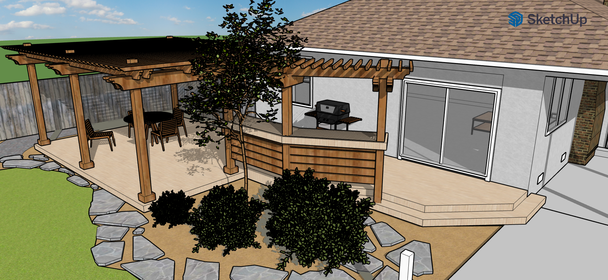
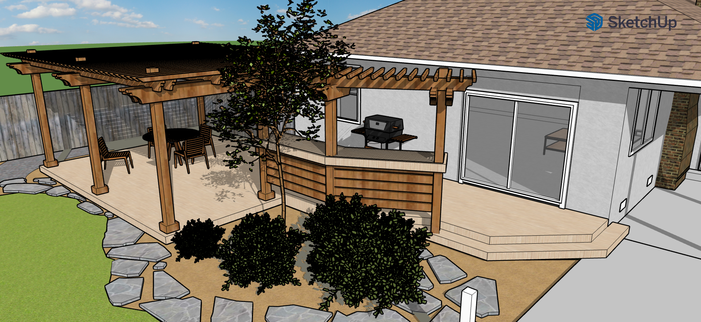
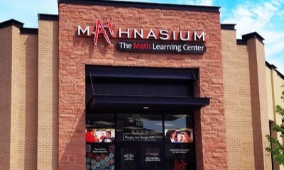

ABOUT ME
I'm an aspiring Robotics Engineer with a strong passion for technology and a determination to grow in the field. Here's a bit about me:
I started my programming journey using scratch as a kid, and since then I have been actively developing and improving my skills in 3D design and programming, learning softwares such as Sketchup, Civil 3D, Blender, Fusion360, and more, and also learning programming languages such as C, C#, C++, Python, and very newly html.
More recently, I have been focusing on developing physical games with hardware and software components, such as a microcontroller which plays simon says and a rover which can autonomously fling balls through hoops in a larger, more robot focused game.
Outside of personal projects and school, I can be found in the gym playing volleyball or at home trying to improve my so-far lackluster cooking skills.
PROJECTS
Sept-PRESENT 2023
Guitarhero on a Microcontroller
For this project, I used a MSP430 microcontroller to program and recreate the popular Guitarhero game. This was mainly completed in C, and required the use of a state machine and several of the ports on the microcontroller, in particular, the port for the buzzer, the LED's, and the buttons (all of which were used to either play the song with the LED fingering lighting up or to actually get the user's input). This project was very fulfilling, and I loved bringing a playable game to the real world.
Aug-PRESENT 2023
Take Me Out to the Ball Game Robot
For this project, I am currently working in a team with two others to build, program, and test a driving robot that can do a set amount of tasks for points, namely locate, grasp, and deposit balls through small holes in the wall autononmously. For this project we are using a camera to detect the position and color of balls around us, motors to control the bots movement, reflectance sensors to detect the colors on the floor boards to aid movement, and much more. We will be done with this project in roughly 3-4 weeks.
Aug-Oct 2021
$3.75 billion UC Davis Hospital Building
For this project, I mainly assisted by looking over, editing, and correcting draft plans for the building. In addition, I modelled and tested certain areas to check if they were up to regulation.
Oct-Nov 2021
.png)
.png) 

Complete Backyard Model
For this project, I was tasked to replicate the house of a client in SketchUp, and then implement the changes that the designer at the company was interested in making. This resulted in redoing the backyard of the house and creating a new deck and cabana area. We later sent this off to get approval from the clients. This work was mainly completed in Sketchup.
EXPERIENCE
Aug-Nov 2021
Siegfried Engineering
Technician I Intern
Designed and produced construction documents using AutoCAD and Civil 3D software
Drafted and presented models for projects in Sketchup
Performed structural detailing in AutoCAD from Engineer design sketches using the companies standard details
Mar-April 2022
Mindiff
Videogame Assistant Intern
Programmed select character abilities
Play tested the game they were launching, Khosmium
Translated content from spanish to english
June 2018-Aug 2021
Mathnasium Tutoring
Math Tutor
Tutored students ages 5-15 in Math
Handled large groups of students
Learned and taught a given math curriculum